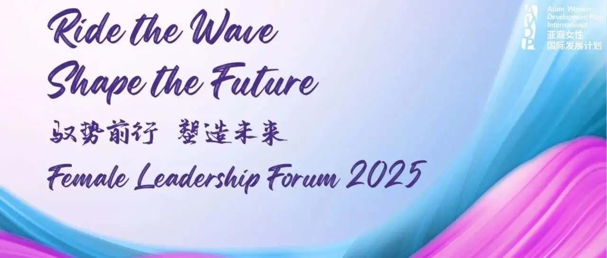
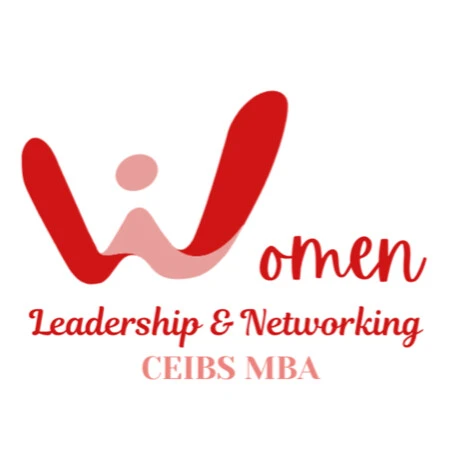
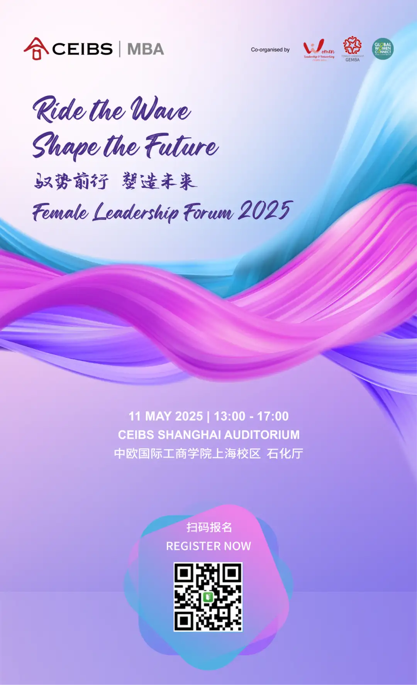
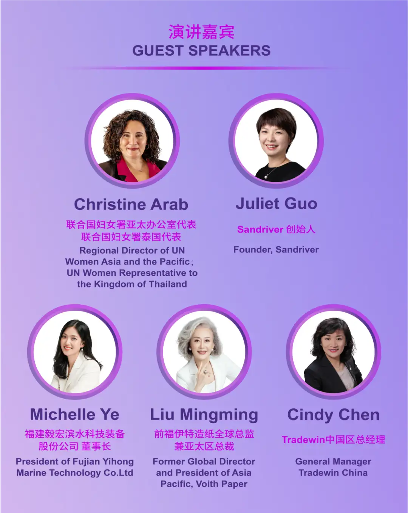
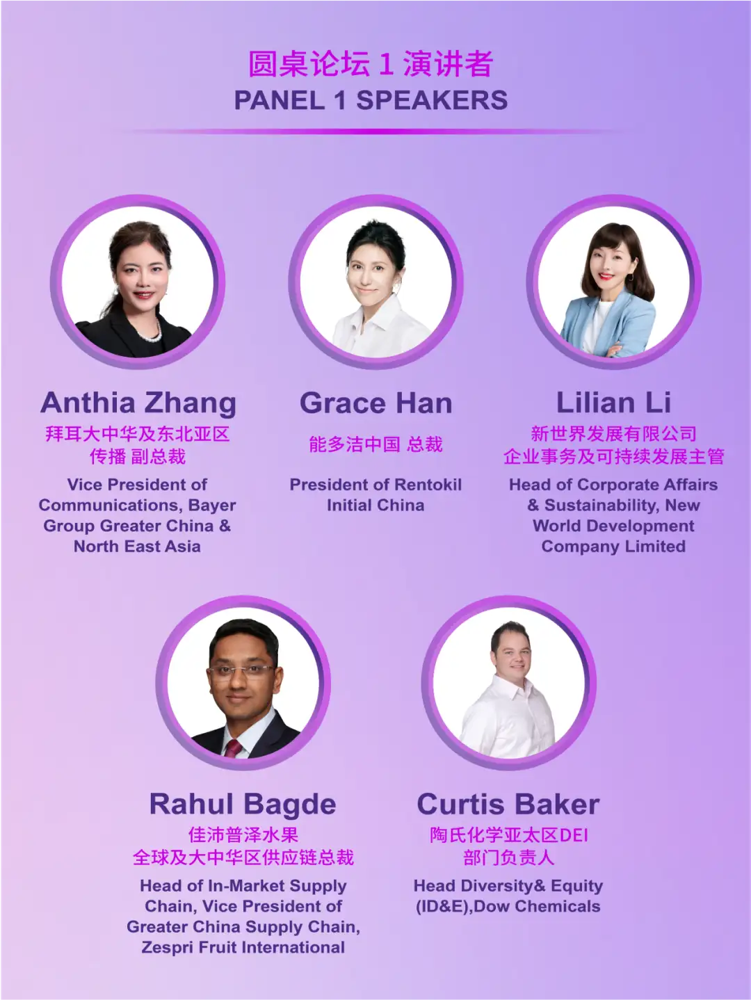
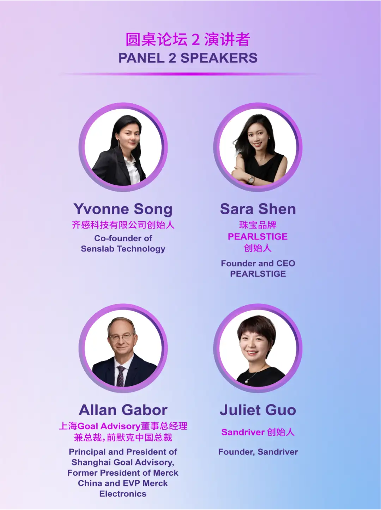
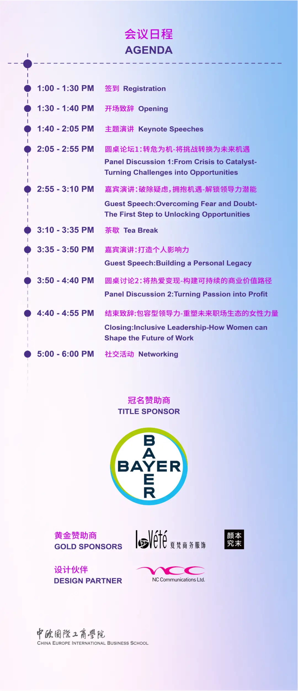
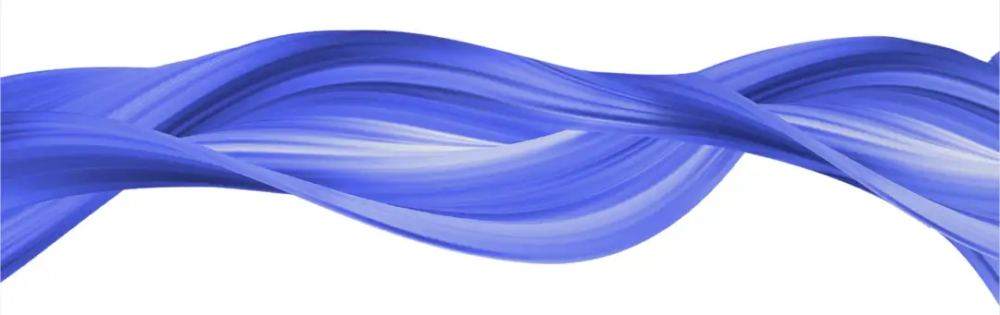

以下文章来源于WLNxCEIBS ，作者WLN CEIBS

Women's Leadership Network是由CEIBS MBA学生自主管理的社团组织。我们的使命不仅仅是为女性建立职场社交平台，更希望能够搭建起一个平等和包容的平台，让女性与男性都能实现各自最大的潜能。


Female Leadership Forum 2025
女性领导力论坛 2025
【Last Call for Registration!】 【最后报名机会!】
随着不确定性成为常态，那些学会“驭势而行”的人，将是塑造未来的人。
与我们一起参加 2025 年女性领导力论坛，进行一个下午的坦诚交谈，并受到我们杰出演讲嘉宾的启发，她们将分享个人成长、领导力和创业的故事。
您将收获：
与行业专家及杰出企业家面对面交流的宝贵机会
拓展200+位志同道合专业人士的人脉网络
精心甄选的礼品套装，包括护肤体验装、母亲节纪念礼及更多惊喜
演讲环节结束后，我们特别安排了交流环节。所有论坛参与者可借此机会与演讲嘉宾面对面交流，拓展人脉。欢迎大家加入！
我们将 78 元的特价门票优惠期延长至 5 月 9 日。不要错过这次机会，立即报名！请扫描二维码，轻松注册，锁定席位。
As uncertainty becomes the new normal, those who learn to ride the wave will be the ones shaping what comes next.
Join us for an afternoon of candid talk at the Female Leadership Forum 2025 and be inspired by our distinguished guest speakers who will share their stories of personal growth, leadership and entrepreneurship.
What you will get:
A unique opportunity to engage with industry experts and accomplished entrepreneurs
The chance to network and connect with over 200 like-minded professionals
A curated gift set featuring a skincare trial set, a Mother’s Day keepsake, and more
All participants are also invited to connect with our speakers in a special networking session after the event. Come join us!
We have extended a special ticket price of RMB 78 until May 9. Don't miss this chance, register now! Simply scan the QR code below to secure your spot.






联合主办
Co-Organisers
CEIBS MBA Women Leadership and Networking Club
The CEIBS MBA Women Leadership and Networking Club aims to create a safe environment to discuss gender equity to empower women to develop their leadership skills and engage women and men in changing their workplace and community.
该俱乐部隶属于中欧国际工商学院 MBA全日制项目，旨在创造一个安全的环境，讨论性别平等问题，以赋能女性，帮助她们发展领导技能，并鼓励女性和男性共同推动职场和社区的变革。
CEIBS Global EMBA Female Leadership Club
Founded in April 2022, the GEMBA Female Leadership Club aims for gender equality in leadership, offering support, and networking. Successful leaders from various fields are invited to inspire club members, and the club explores ways to leverage leadership for social impact, advocating for gender equality and the growth of GEMBA women.
该俱乐部成立于2022年4月，是CEIBS全球EMBA项目的官方组成部分。其目标是在领导力领域推动性别平等，并提供支持和建立社交网络。俱乐部邀请来自不同行业的成功领导者来激励成员，同时探讨如何利用领导力产生社会影响，倡导性别平等，并促进GEMBA女性的成长。
Global Women Connect
Global Women Connect (GWC) is a not-for-profit organization that provides a global platform for women to share, learn and inspire each other in order to help women move to the next level in life and leadership, and to empower girls and women in need.
GWC是一家非营利组织，为女性提供一个全球化的平台，让她们可以分享、学习并相互激励，以帮助女性在生活和领导力方面迈向更高的水平，并赋能需要帮助的女性和女孩。
*本次活动门票将用于支付交流互动环节的茶歇等第三方费用，非盈利用途。
**肖像使用免责声明：活动期间将拍摄现场照片或视频用于后期宣传，您可能会出现在活动的镜头中，如有任何疑虑，请联系工作人员。若您在活动结束前未提出异议，则视为同意活动方将拍摄现场照片或视频用于活动后期的宣传使用。